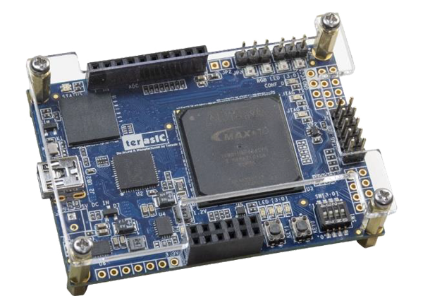
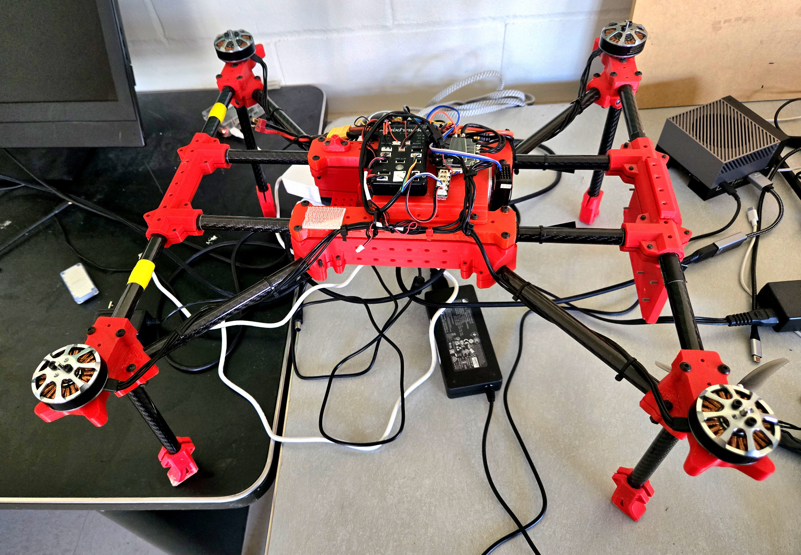

Project 01
TinyRV1 Single-Cycle Processor
Designed a single-cycle TinyRV1 processor and hardware accelerator in Verilog, then deployed and verified the system on an FPGA.

Selected work
A collection of hardware, embedded, digital design, and engineering projects.
Project 01
Designed a single-cycle TinyRV1 processor and hardware accelerator in Verilog, then deployed and verified the system on an FPGA.

Project 02
Designed and integrated electrical systems across multiple multirotor platforms, including wiring schematics, hardware assembly, flight-controller integration, and system bring-up.

Project 03
Built a two-board embedded guessing game using UART, interrupts, LCD displays, physical inputs, and real-time LED feedback.

Project 04
Built a real-time RP2350 audio synthesizer with DDS, programmable frequency recording, accelerated playback, and composition of bird-like sound sequences.